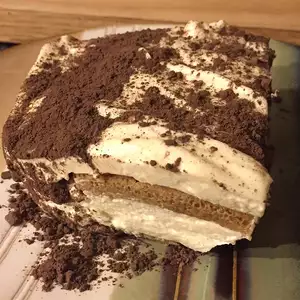

Tiramisu

Just do it!
- INGREDIENTS
- 3 egg yolks
- ¼ cup white sugar
- 2 teaspoons vanilla extract
- 1 ⅛ cups mascarpone cheese
- 24 ladyfingers
- 1 ½ cups brewed coffee
- 1 tablespoon unsweetened cocoa powder
- Directions
- In a medium bowl, beat yolks, sugar, and vanilla until smooth and light yellow.
Fold mascarpone into yolk mixture. Set aside.
- Dip ladyfingers briefly in coffee and arrange 12 of them in the bottom of an
8x8-inch dish. Spread half the mascarpone mixture over ladyfingers.
Repeat with remaining ladyfingers and mascarpone. Cover and chill 1
hour. Sprinkle with cocoa just before serving.
Go Back